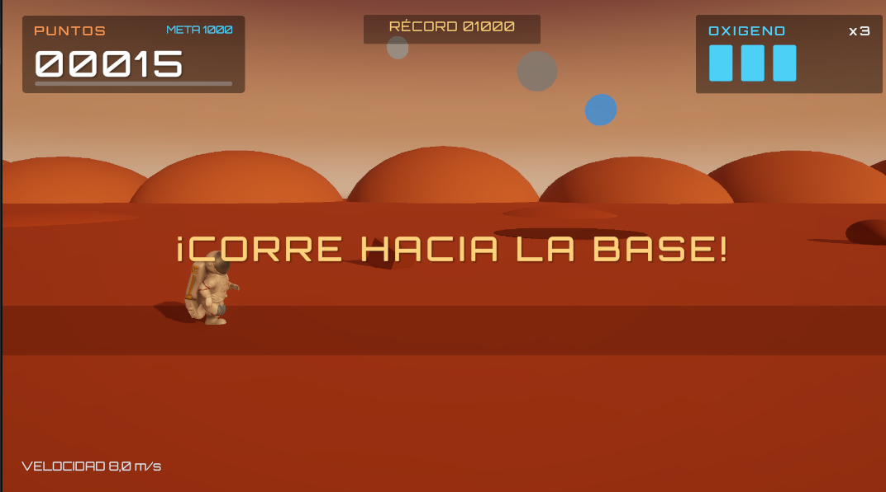
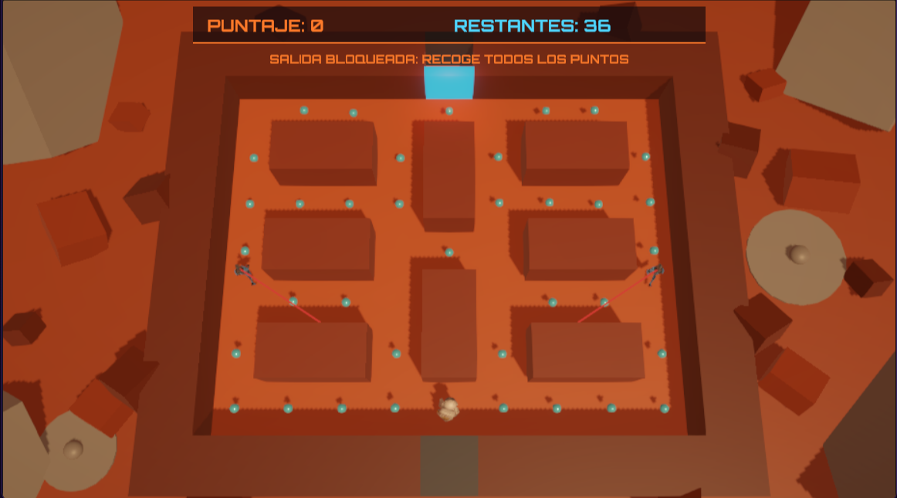
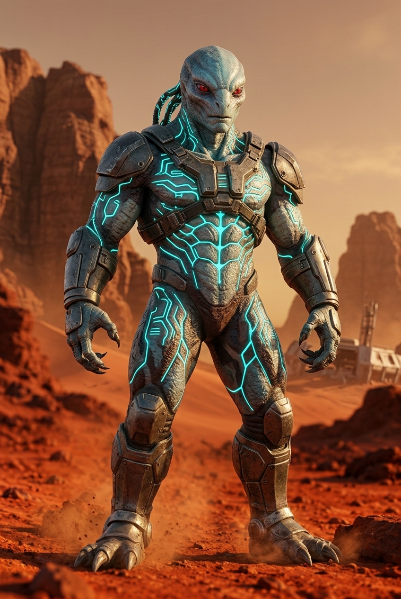
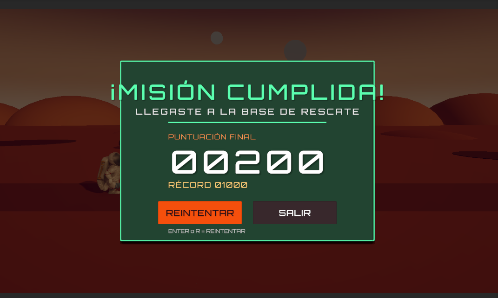
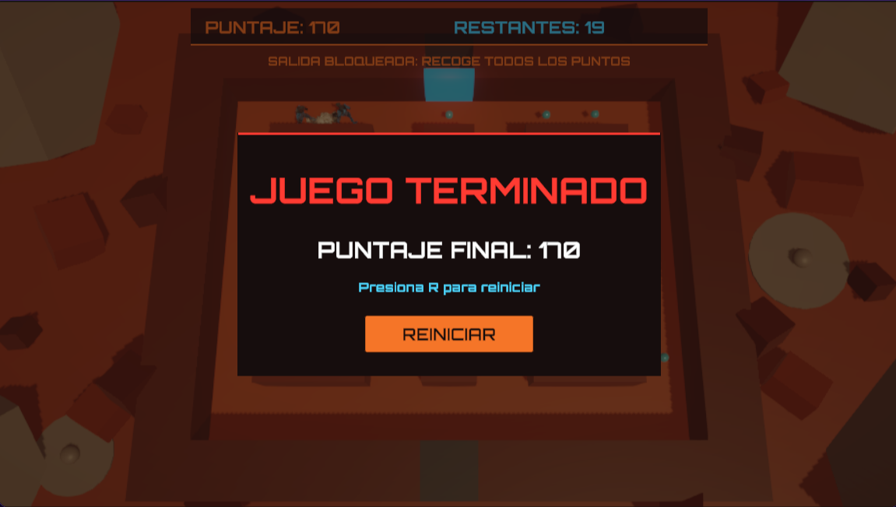

Endless runner · 3DReflejos y velocidad
Mars Runner
Corre sin detenerte, salta sobre las rocas y agáchate para esquivar los meteoritos. Alcanza 1000 puntos para llegar a la nave de rescate.
- 3 vidas
- 1000 puntos objetivo
- ↑ ↓ controles
Misión de rescate · Marte 2049
Dos juegos. Un planeta hostil.
Una tormenta de meteoritos destruyó tu nave y estás solo en Marte. En Mars Runner corres, saltas y te agachas para llegar a la nave de rescate. En The Alien Laberinth recoges 36 cristales de energía y escapas de los aliens que patrullan el laberinto.
Centro de operaciones
Uno pone a prueba tus reflejos y el otro tu estrategia. Elige tu misión.

Endless runner · 3DReflejos y velocidad
Corre sin detenerte, salta sobre las rocas y agáchate para esquivar los meteoritos. Alcanza 1000 puntos para llegar a la nave de rescate.

Laberinto · ExploraciónEstrategia y sigilo
Recoge los 36 cristales de energía, abre la puerta de salida y escapa. Dos aliens patrullan el laberinto y te persiguen si te ven.
Misión de velocidad
Sobrevive el tiempo suficiente para alcanzar la nave de rescate.
Pulsa START para cargar la misión en esta ventana.
Requisitos
Cómo jugar
Misión de exploración
Tu orientación y tu estrategia deciden si sales con vida.
Pulsa START para cargar la misión en esta ventana.
Controles y reglas
Amenaza detectada
Registro de la expedición
Empezó como una expedición científica. Ahora cada decisión separa volver a casa de desaparecer en Marte.
 Archivo de misión · 2049
Archivo de misión · 2049
Una misión científica llega a Marte para explorar su superficie, estudiar sus cráteres y recopilar datos del planeta rojo.
Una tormenta de meteoritos destruye la nave. El astronauta queda aislado, lejos de la base de rescate.
Al explorar un antiguo complejo, descubre que no está solo: criaturas de armadura luminosa patrullan el laberinto y custodian los cristales de energía.
Llegar a la nave de rescate, o recoger todos los cristales y cruzar la puerta del laberinto, es su única salida.

Personal de la misión
El último superviviente de la expedición.
Explorador científico con un traje espacial preparado para las condiciones extremas de Marte. Su agilidad y capacidad de reacción son esenciales para completar ambas misiones.
Amenaza clase A
Nadie ha salido del laberinto sin cruzarse con uno.
Criatura reptiliana de piel gris azulada, ojos rojos y armadura metálica recorrida por vetas de energía turquesa. Patrulla el laberinto en una ruta fija y, si detecta al astronauta, lo persigue sin descanso hasta alcanzarlo.
Consejo: rompe su línea de visión usando los bloques del laberinto y recoge los cristales cuando se alejen.

Manual del explorador
Controles, reglas y capturas de los dos juegos.
Endless runner 3D
Flecha arriba
Supera las rocas marcianas a ras del suelo.
Flecha abajo
Deslízate bajo los meteoritos que cruzan a tu altura.
Peligros del terreno
Condiciones de misión


Laberinto de exploración
Flechas del teclado
Recorre el laberinto y recoge los cristales de energía.
Tecla R
Vuelve a empezar tras ganar o perder.
Amenaza detectada
Condiciones de misión



Informe técnico
Las características principales de cada juego, lado a lado.
Especificaciones
| Mars Runner | The Alien Laberinth | |
|---|---|---|
| Género | Endless runner | Laberinto de exploración |
| Objetivo | Llegar a 1000 puntos | Recoger 36 cristales y cruzar la puerta |
| Controles | Flechas ↑ y ↓ | Flechas y tecla R |
| Peligros | Rocas y meteoritos | 2 aliens que patrullan y persiguen |
| Derrota | Perder las 3 vidas | Que un alien te alcance |
| Motor | Unity WebGL | Unity WebGL |
| Estilo | Sci-Fi / Low Poly | Sci-Fi / Low Poly |
| Equipo | Warlings | Warlings |
Mars Runner
La velocidad sube y los obstáculos aparecen cada vez más juntos.
The Alien Laberinth
Cuantos menos cristales quedan, más te alejas de las zonas seguras.